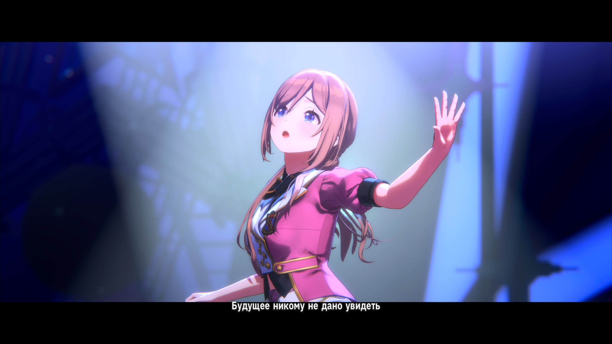
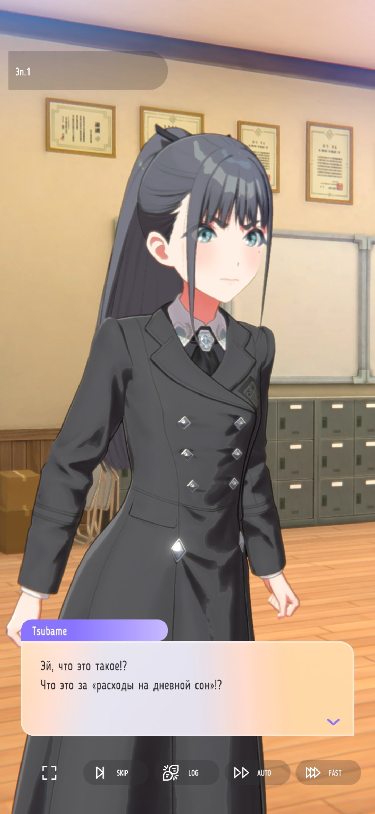
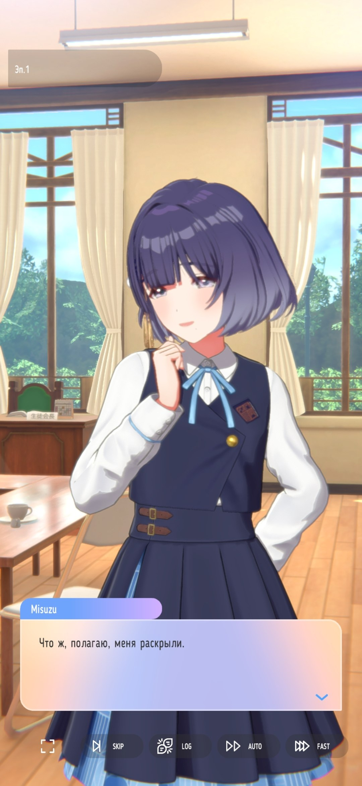
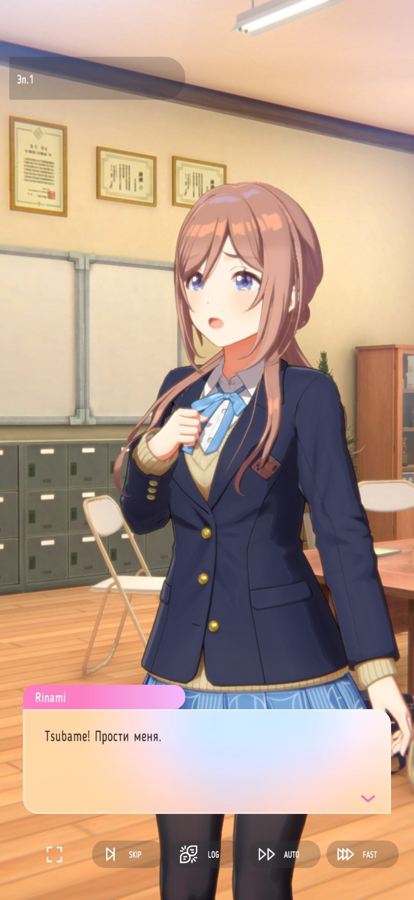
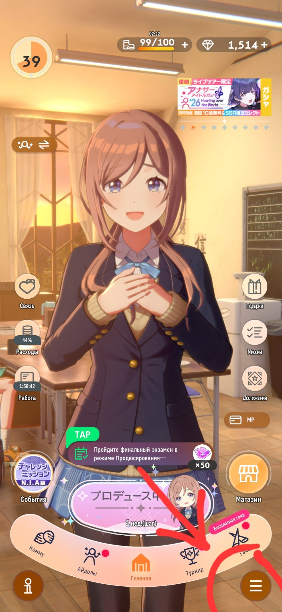
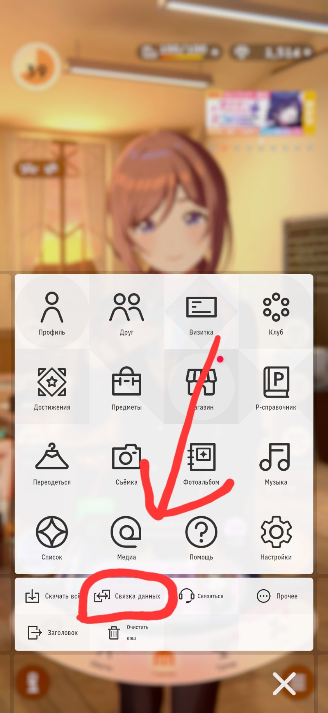
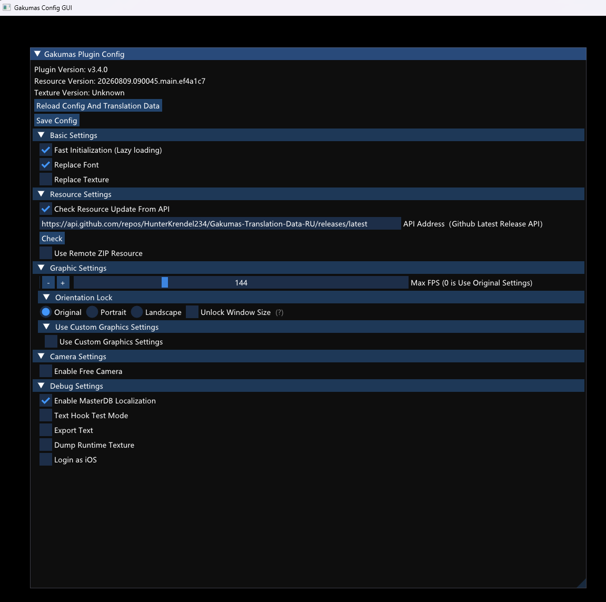
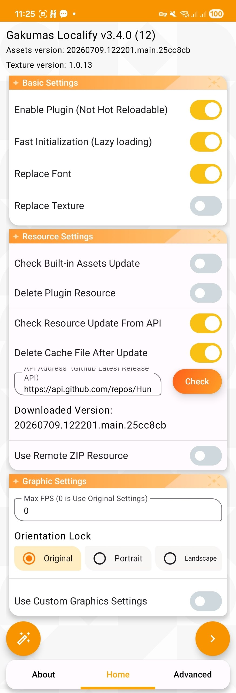
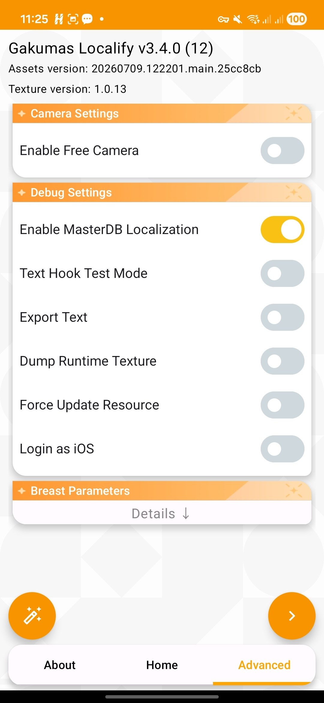

Gakumas Translation Data RU
Русский перевод игры Gakuen Idolmaster (Gakumas)
для gakuen-imas-localify.
Версии для ПК (DMM) и Android
Скриншоты




Установка
Выберите платформу - вы увидите шаги установки и ссылку для скачивания.
Помощь и актуальные инструкции - на нашем Discord-сервере.
ПК (DMM)
Локализация для компьютерной версии игры через DMM. Перед установкой или обновлением локализации сохраните данные игры, чтобы не потерять прогресс:   Если необходимо загрузить уже существующий прогресс на другом устройстве:
Сложность: Легкая (3 шага).
Если будет трудно - загляните сюда.
Важно! Сохраните прогресс игры перед установкой!
🔗 Привязка аккаунта в игре
📥 Загрузка сохранения
📦 Шаг 1. Подготовка
- ⚠️ Для работы игры как на ПК, так и на смартфоне требуется японский VPN-сервер.
- Скачайте
DMM_GakumasLocalify_v-.-.-.zipпоследней версии: Gakumas Localify - Зайдите на DMM Gakumas: DMM Gakumas
- ⚠️ Для работы DMM Game Player и игры требуется японский VPN-сервер.
Его отключение и запуск DMM Game Player приведет к выходу из аккаунта DMM Game Player. - Нажмите Game Start.
- Скачайте и установите DMM Game Player выбрав его в качестве средства запуска.
- После установки запустите DMM Game Player и зарегистрируйте или войдите в аккаунт.
- После найдите Gakumas и установите игру.
- После запустите игру.
- 💡 Если работает, можно закрыть игру.
🛠️ Шаг 2. Установка
- Откройте скаченный ранее архив DMM_GakumasLocalify_v-.-.-.zip
- Скопируйте из архива папку и файл в корень с игрой.
- 💡 Папка gakumas-local и файл version.dll
Путь к игре:C:\Users\%USERPROFILE%\gakumas - Удалите все в папке gakumas-local.
🌐 Шаг 3. Установка русской локализации
- Запустите игру и нажмите Ctrl + U чтобы открыть Gakumas Config GUI.
- Раскройте все пункты и выставите параметры как на скриншоте.
- 💡 За правый край окна конфигурации можно растянуть окно.
- В пункте API Address (Github Latest Release API) замените стандартную ссылку на:
- Нажмите Chek.
- Скачайте обновление локализации и перезапустите игру.

🎉 Готово!
Русская локализация установлена.
В дальнейшем игру можно запускать обычным способом.
Через её стандартный значок на рабочем столе.
Приятной игры!
Возникли трудности?
💬 Поддержка в Discord
Android
Локализация для Android-устройств. Перед установкой или обновлением локализации сохраните данные игры, чтобы не потерять прогресс: Если необходимо загрузить уже существующий прогресс на другом устройстве:
Сложность: Средняя (4 шага).
Если будет трудно - загляните сюда.
Важно! Сохраните прогресс игры перед установкой!
🔗 Привязка аккаунта в игре
📥 Загрузка сохранения
📦 Шаг 1. Подготовка
- ⚠️ Для работы игры как на ПК, так и на смартфоне требуется японский VPN-сервер.
- Скачайте и установите: Shizuku: Shizuku
- Скачайте и установите: Gakumas.Localify_v-.-.-.APK последней версии: Gakumas Localify
- Скачайте игру в формате XAPK.
- 💡 Google Play версию игры можно вытащить через утилиты в нужный формат.
Этот процесс чуть сложнее, поэтому не будем рассматривать.
Например, можно найти XAPK игры на APKPure (не реклама): APKPure (не реклама) - ⚠️ Сторонние источники скачивания APK/XAPK (в том числе APKPure) используйте на свой страх и риск.
🛠️ Шаг 2. Настройка Shizuku
- 💡 Необходимо включить режим разработчика на телефоне и запустить Shizuku через отладку по Wi-Fi.
Это позволит Localify получить необходимые права для патчинга игры. - Включите Режим разработчика в настройках Android.
- В меню разработчика активируйте «Отладка по Wi-Fi».
- Откройте Shizuku и во вкладке «Запуск через отладку по Wi-Fi» нажмите «Сопряжение».
- Прочитайте инструкцию на экране и нажмите «Параметры разработчика».
- В настройках отладки по Wi-Fi выберите «Подключить устройство с помощью кода подключения».
- Появится код сопряжения. Shizuku отправит уведомление - введите этот код в уведомлении.
- Вернитесь на главный экран Shizuku и нажмите «Запустить».
- После успешного запуска появится пункт «Доступно для 0 приложений» (или больше). Нажмите на него.
- Включите доступ для Gakumas Localify.
🪄 Шаг 3. Патчинг и установка игры
- Откройте Localify.
- В Localify перейдите во вкладки Home и Advanced и установите параметры в соответствии со скриншотами.


- Нажмите на иконку волшебного карандаша слева.
- Убедитесь, что отображается:
Shizuku service available. - 💡 Это означает, что Shizuku успешно запущен и доступен для Localify.
- Выберите режим Integrated.
- Нажмите на волшебный карандаш справа.
- Выберите ранее скачанный XAPK-файл игры.
- Дождитесь окончания патчинга.
- Когда появится:
Patch finished. Start installing?нажмите ОК. - После успешной установки в нижней части лога Localify появится:
Done - 💡 После установки можно отключить режим разработчика, закрыть Shizuku и удалить исходный XAPK, чтобы освободить место.
- ⚠️ Не удаляйте Localify и Shizuku. Они понадобятся для последующих обновлений игры.
🌐 Шаг 4. Установка русской локализации
- В поле со ссылкой на GitHub API сначала нажмите Check, чтобы загрузить базовое обновление локализации.
- Полностью закройте Localify (выгрузите приложение из памяти).
- Снова откройте Localify.
- В пункте API Address (Github Latest Release API) замените стандартную ссылку на:
- Нажмите Check и дождитесь загрузки русской локализации.
- После завершения загрузки нажмите стрелку справа для первого запуска игры.
- 💡 При первом запуске игра может закрыться. Это особенность LSPatch, поэтому просто повторно запустите игру.
🎉 Готово!
Русская локализация установлена.
В дальнейшем игру можно запускать обычным способом.
Через её стандартный значок на рабочем столе.
Приятной игры!
Возникли трудности?
💬 Поддержка в Discord
О проекте
Русификация выполнена с использованием автоматизации на базе локальной LLM-модели. Репозиторий основан на английском проекте Gakumas Translation Data EN.
В связи с автоматизированным переводом в локализации могут встречаться неточности. Например:
- перепутанный род в фразах персонажей;
- некорректные формулировки;
- слитный или неудачно оформленный текст в некоторых карточках;
- другие ошибки перевода.
Основная цель проекта - сделать Gakumas понятнее для игроков, которые не знают японский или английский, но любят айдол-тематику, аниме или просто хотят познакомиться с игрой.
Техническая информация (для переводчиков и помощников)
./local-files/localization.json- строки локализации, в основном UI./local-files/generic.json- общие строки, в основном UI./local-files/genericTrans/index- общие строки, в основном UI./local-files/genericTrans/lyrics- песни./local-files/resource- ресурсные файлы, в основном комму (сюжетные сцены)./local-files/gakumasassets- кастомный шрифт для ПК-версии игры./local-files/gkanz0-ontMIX.otf- кастомный шрифт для Android-версии игры